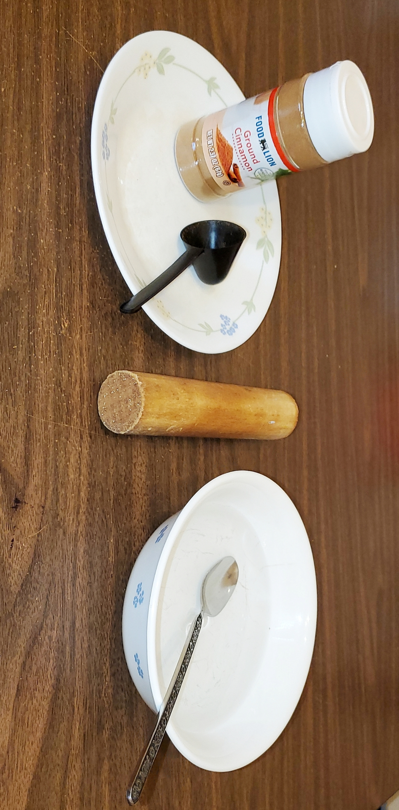

This is a recipe for "Cinnamon Incense Cone"
Ingredients
- Cinnamon
- Water
- A coffee scoop to use as a mold
- A packer like a finger or a short piece of wood dowel
- A clean working surface
Directions
- Fill your mold with cinnamon and empty it onto your work surface.
- Add approximately 2 tsp. of water. Mix with your fingers until you have made a paste.
- Pack this paste into your mold a little at a time until it’s full.
- Place the mold in a sunny location and let the cone dry out and harden for approximately 24 hours.
- Gently remove the cone from the mold, and put the cone back in the sunny location for another 24 hours or more. The drier the cone, the better.
- Light up, and enjoy. It might be a little difficult to light, but once lit it will burn down to a pile of ash.
Download Recipe